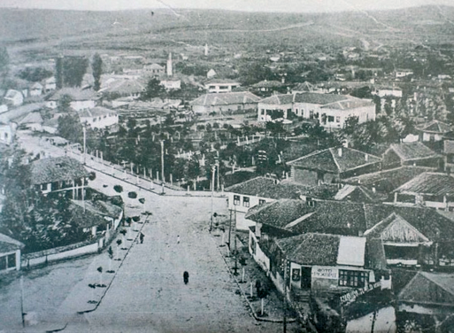
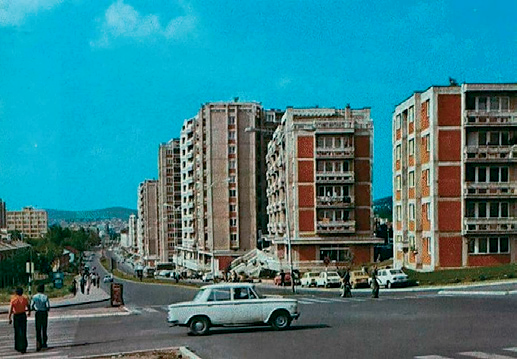
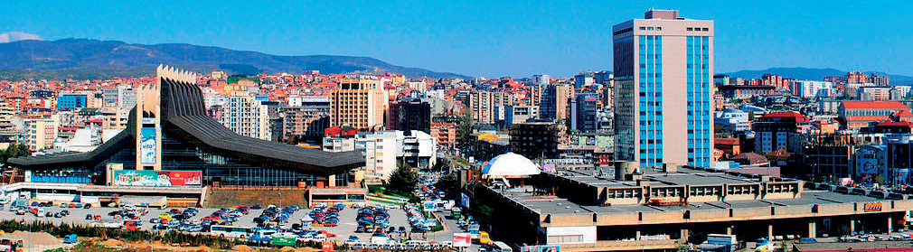
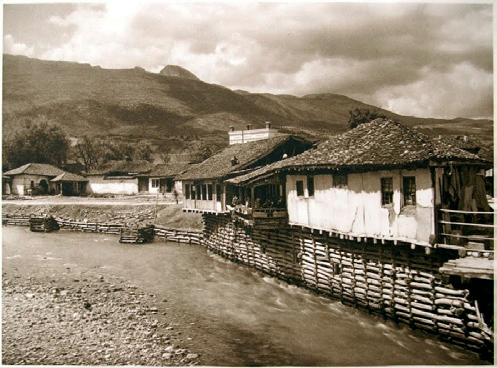
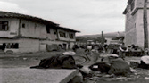
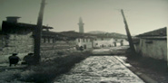
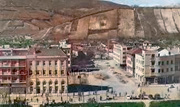
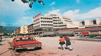
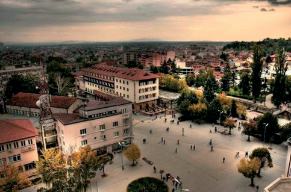

Qyteti dikur dhe sot

Prishtina dikur përbëhej nga shtëpi të ulëta, me rrugë të ngushta me gurë, që quhen kalldrëm. Gjithashtu, kishte më pak makina që qarkullonin dhe kishte më shumë pjesë të qytetit të gjelbëruara.Njerëzit punonin si zejtarë dhe tregtarë nëpër dyqane. Kishte edhe kisha, xhami dhe vende të tjera të lutjes, ndërsa institucione dhe shkolla kishte pak dhe të gjitha ishin shtetërore.

Më pas, filloi të shfaqet nevoja për ndërtimin e fabrikave dhe zhvillimin e qytetit dhe kështu filloi edhe ndryshimi i qytetit të Prishtinës, njësoj si i qyteteve të tjera. U ndërtuan banesa shumëkatëshe, u zgjeruan dhe u asfaltuan rrugët, u rrit numri i automjeteve në qytet, u ndërtuan fabrika dhe qendra të ndryshme tregtare, si dhe u shtua numri i institucioneve, i shkollave dhe i çerdheve për fëmijë.
Në ditët e sotme, qyteti karakterizohet nga shtëpi e ndërtesa shumëkatëshe, rrugë gjarpërore në çdo pjesë të qytetit, si dhe me autostrada, që lidhin vendbanimet e ndryshme.Po ashtu, edhe institucione ka më shumë. Ka shumë më shumë edhe shkolla, kopshte për fëmijë, biznese e qendra tregtare.

Analizo fotografitë dhe diskuto për ndryshimet që ka pësuar qyteti i Pejës.





